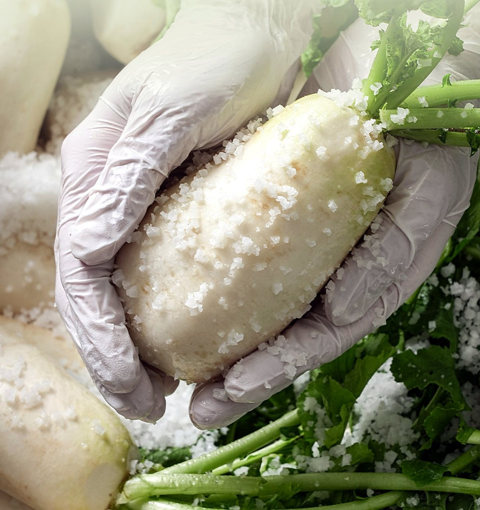
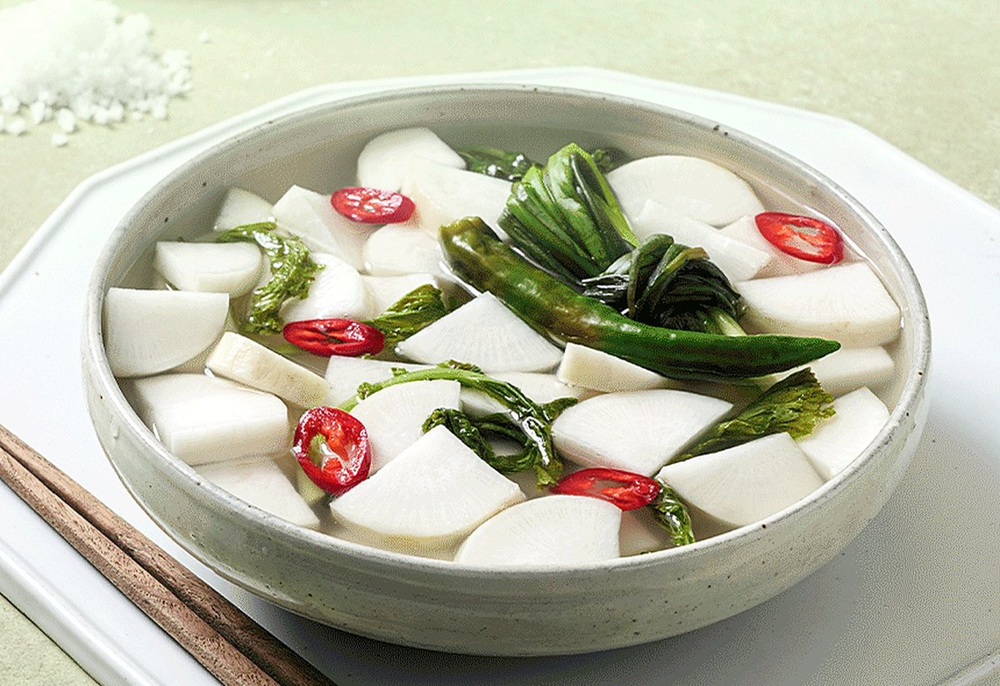

그리운밥상 페어링 ② 동치미 × 군고구마
 그리운밥상 동치미 · 연출 이미지그리운밥상 동치미 · 연출 이미지
그리운밥상 동치미 · 연출 이미지그리운밥상 동치미 · 연출 이미지 연출 이미지
연출 이미지갓 구운 고구마는 달고 뜨겁고, 먹다 보면 목이 살짝 메어요. 그럴 때 차가운 동치미 국물 한 숟갈이면 입안이 산뜻하게 풀려요. 김장 끝난 겨울밤, 오래된 간식 짝꿍이에요.
 연출 이미지
연출 이미지1763년 통신사로 일본에 가던 조엄이 대마도에서 고구마 종자를 구해 보냈고, 동래에서 시험 재배가 시작됐어요. 1765년 동래부사 강필리가 재배에 성공해 『강씨감저보』를 남겼죠. 흉년을 넘기는 구황작물로 귀하게 여겨졌어요.

그리운밥상 무 절이기찬바람이 불면 고구마는 단맛이 깊어지고, 김장철 무는 단단하고 달게 여물어요. 같은 계절에 맛이 오르는 둘이라, 한 상에 놓이면 더 잘 어울려요.
 연출 이미지
연출 이미지겨울이면 화롯불 재 속에 고구마를 묻어 두고 익기를 기다렸어요. 껍질은 까맣게 타도 속은 노랗고 달았죠. 그 곁엔 장독에서 막 떠 온 동치미가 놓였어요.
 그리운밥상 동치미 · 살얼음 연출
그리운밥상 동치미 · 살얼음 연출진한 단맛 뒤에 동치미의 산뜻한 맛이 들어오면, 다음 한 입의 단맛이 다시 또렷해져요.
 그리운밥상 동치미 · 연출 이미지
그리운밥상 동치미 · 연출 이미지입안 가득 퍼지는 뜨끈하고 포슬한 고구마, 살얼음 낀 국물과 아삭한 무. 서로 반대인 온도와 식감이 만나 한 입 한 입이 새로워요.

그리운밥상 동치미 그리운밥상 동치미 · 백열무김치
그리운밥상 동치미 · 백열무김치